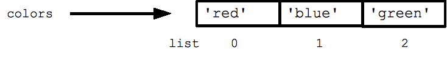

Python - Lightspeed revision
Importing modules
>>>import socket >>>import argparse >>> >>> dir() ['__builtins__', '__doc__', '__name__', '__package__', 'socket', 'argparse'] >>>
>>> from socket import * >>> from scapy.all import * >>> dir() ['AF_APPLETALK', 'AF_ASH', 'SOCK_DGRAM', 'SOCK_RAW', 'SOCK_RDM', 'SOCK_SEQPACKET', 'SOCK_STREAM'] [...snipped...]
Introspection
- Extremely powerful pythonic feature.
- Features in Python that help understand other features.
- Everything in Python is an object, and introspection is to look at this objects in memory and provide information them(attributes & methods).
help()
>>> help(sys)
dir()
>>> dir(sys) ['__displayhook__', '__doc__', '__excepthook__' [...snipped...]]
type()
>>> import sys >>> >>> >>> type(sys) <type 'module'> >>> type(1) <type 'int'> >>> type()
doc string
>>> sys.__doc__ "This module provides access to some objects used [...snipped...]"
Python - Lists
- Syntax: my_list = [item0, item1,item2]
- Collection of elements of any data type.
- Lists are mutable (Can be changed even after creation).
- Python provides numerous methods on lists. Just dir(list_name) to get a list of all the methods available.
- Indexing & Slicing mechanism is consistent with strings.
- Lists have very useful methods to manipulate them such as append, count, extend, index, insert, pop, remove, reverse,sort.
colors = ['red', 'blue', 'green'] print colors[0] ## red print colors[2] ## green print len(colors) ## 3

Assignment with an = on lists does not make a copy. Instead, assignment makes the two variables point to the one list in memory.

List of lists or sublists
Lists can have sublists as elements. These sublists may contain sublists as well, i.e. lists can be recursively constructed by sublist structures.

>>> employee_details = [('Mark','22489'),('Steph','88153'),('Ajay','99112')] >>> >>> for i in xrange(len(employee_details)): ... print employee_details[i][0], employee_details[i][1] ... Mark 22489 Steph 88153 Ajay 99112
Tuples
- Syntax my_tuple = (val0, val1)
- A tuple is a fixed size grouping of elements.
- Tuples are like lists but are immutable and do not change size (tuples are not strictly immutable since one of the contained elements could be mutable).
- Tuples have no other methods other than builtin's
- Tuples are faster than lists.
- Tuples are immutable so they protect from data being changed.
- Tuples can be used as keys in a dictionary.
tuple = (1, 2, 'hi') print len(tuple) ## 3 print tuple[2] ## hi tuple[2] = 'bye' ## NO, tuples cannot be changed tuple = (1, 2, 'bye') ## this works
If/elif/else
- Any value can be used as an if-test. The "zero" values all count as false: None, 0, empty string, empty list, empty dictionary.
- Comparision operations: ==, !=, <, <=, >, >=
- The boolean operators are the spelled out words and, or, not (Python does not use the C-style && || !).
return = scan_target('10.5.0.6') if return == 0: print "[+] Scan sucessful!!" print packet elif return ==1: print "[-] Scan unsucessful!!" print "[*] Inspect with wireshark" else: print "[!] Unknown error"
if speed >= 80: print 'License and registration please' if mood == 'terrible' or speed >= 100: print 'You have the right to remain silent.' elif mood == 'bad' or speed >= 90: print "I'm going to have to write you a ticket." write_ticket() else: print "Let's try to keep it under 80 ok?
While loop
Python also has the standard while-loop, and the break and continue statements work as in C++ and Java, altering the course of the innermost loop. The above for/in loops solves the common case of iterating over every element in a list, but the while loop gives you total control over the index numbers. Here's a while loop which accesses every 3rd element in a list:
## Access every 3rd element in a list i = 0 while i < len(a): print a[i] i = i + 3
For Loop
FOR - IN construct
- Python's for and in constructs are extremely useful.
- The for construct --
for var in list-- is an easy way to look at each element in a list (or other collection). Do not add or remove from the list during iteration.
squares = [1, 4, 9, 16] sum = 0 for num in squares: sum += num print sum ## 30
- The in construct on its own is an easy way to test if an element appears in a list (or other collection) --
value in collection-- tests if the value is in the collection, returning True/False.
list = ['larry', 'curly', 'moe'] if 'curly' in list: print 'yay'
Range & Xrange
- Python for loop iterates over a range of numbers, list of elements.
- The range(n) function yields the numbers 0, 1, ... n-1, and range(a, b) returns a, a+1, ... b-1
>>> from socket import * >>> open_ports = [21, 23, 25, 80, 139, 8080] >>> >>> for a in xrange(len(open_ports)): ... print "[+] Port num: {} {} is open.".format(open_ports[a], getservbyport(open_ports[a])) ... [+] Port num: 21 ftp is open. [+] Port num: 23 telnet is open. [+] Port num: 25 smtp is open. [+] Port num: 80 http is open. [+] Port num: 139 netbios-ssn is open. [+] Port num: 8080 http-alt is open. >>>
print as a statement
- In Python2.X
printis a statement not a function. - Very intutive but not very powerful.
>>> answer = 42 >>> print "The answer is: " + str(answer) The answer is: 42
print as a function
- In Python 3.X
printis a function which gives it more control on how to print stuff. - You can import print funtion into python 2.7.X using the statement
from future import print_function - I would recommend using print as a function even in Python2.X, for one your code will be more compatiable with Python3.X and also print function gives you more control on the output.
>>> from __future__ import print_function # This internally sets a flag that lets interpreter enable print function >>> answer = 42 >>> print('The answer is: '+str(42)) The answer is: 42
- Print as a funtion can take arguments which provide more control on how you ptint stuff.
print(value1, ..., sep=' ', end='\n', file=sys.stdout, flush=False) # # file: a file-like object (stream); defaults to the current sys.stdout. # sep: string inserted between values, default a space. # end: string appended after the last value, default a newline. #
- With the
endargument you can choose what is appended as the last value.
# Building a simple NOP sled for memory exploits # Only one of the output works for a NOP sled. Which one? Why?(Out of this workshop context though) >>> >>> print('\x90'*30) ������������������������������ >>> >>> print('\x90'*30, end='') ������������������������������>>> >>>
- By redefining the keyword parameter
filewe can send the output into a different stream e.g. to a file or stderr
>>> fh = open("data.txt","w") >>> print("42 is the answer, but what is the question?", file=fh) >>> fh.close() # we see no ouput to console after print because it's directed into the file fh
C-Style format strings
- The nearest thing to c-style printf equivalent in python.
'%s %s' % ('one', 'two')

>>> port_number = 139 >>> >>> host = '10.5.0.6' >>> >>> print "Port num: %d is open on Host: %s"%(port_number, host) Port num: 139 is open on Host: 10.5.0.6
For more on format string modulo: http://www.python-course.eu/python3_formatted_output.php
Pythonic style - string format method.
-
Python has awesome string formatters to produce beautifully formatted output.
-
The "fields to be replaced" are surrounded by curly braces {}.
'{} {}'.format('one', 'two')
>>> print "[+] Port num: {} on host {} is open.".format(port_number, hostname)
Placeholders
- Python string format method supports placeholders and an explicit positional index.
{1} {0}'.format('one', 'two') - A positional parameter of the format method can be accessed by placing the index of the parameter after the opening brace, e.g. {0} accesses the first parameter.

- Keywords can be used to index parameters as well.(Named placeholders)
>>> "Art: {a:5d}, Price: {p:8.2f}".format(a=453, p=59.058) 'Art: 453, Price: 59.06' >>>
Padding and aligning strings
By default values are formatted to take up only as many characters as needed to represent the content. It is however also possible to define that a value should be padded to a specific length.
- We can precede the formatting with a "<" (left justify) or ">" (right justify)
>>> '{:>10}'.format('test') # right align ' test' >>> >>> "{0:<20s} {1:6.2f}".format('Spam & Eggs:', 6.99) # left align 'Spam & Eggs: 6.99' >>> >>>'{:^10}'.format('test') #center align ' test '
- Choose your character for padding.
'{:_<10}'.format('test')
>>> '{:_<10}'.format('test') 'test______'
Further reading on string format method https://pyformat.info/
sys.stdout.write()
This could be used to write to standard output or consoles when print doesn’t seem to work.
>>> pack = '\x90\x32\x67\x70' >>> sys.stdout.write(pack) �2gp>>>
List Comprehensions
- A list comprehension is a compact way to write an expression that expands to a whole list.
- List comprehension can almost substitute for the lambda function especially as map(), filter() and reduce().

Examples
# compute a list of their squares of elements in a list nums = [1, 2, 3, 4] squares = [ n * n for n in nums ] ## [1, 4, 9, 16]
>>> port_numbers = [22,25,80,139,443] >>> [k for k in port_numbers] [22, 25, 80, 139, 443] >>> >>> numbers = [2,4,6,8] >>> [k*2 for k in numbers] [4, 8, 12, 16]
- You can add an if test to the right of the for-loop to narrow the result. The if test is evaluated for each element, including only the elements where the test is true.
>>> port_numbers = [22,25,80,139,443,8080,9999,55555] >>> >>> [k for k in port_numbers if k<1023] [22, 25, 80, 139, 443]
Lambda functions
Syntax: lambda arg1, arg2, ...argN : expression using arguments.

- Python supports the creation of anonymous functions (i.e. functions that are not bound to a name) at runtime, using a construct called "lambda".
- Lambda functions take any number of arguments but only has one expression, the result of this expression is returned.
>>> def f (x): return x**2 ... >>> print f(8) 64 >>> >>> g = lambda x: x**2 >>> >>> print g(8) 64
- Lambda functions can be used anywhere a function is expected, not necessary to assign it to a variable.
- You can pass lambda functions to other functions to do stuff(for example lambda function as key to sorted())
mult3 = filter(lambda x: x % 3 == 0, [1, 2, 3, 4, 5, 6, 7, 8, 9])
Using Lambda
Lambda funtions are good when they are short and as throw away functions. If you plan on doing anything remotely complex with it, put lambda away and define a real function.